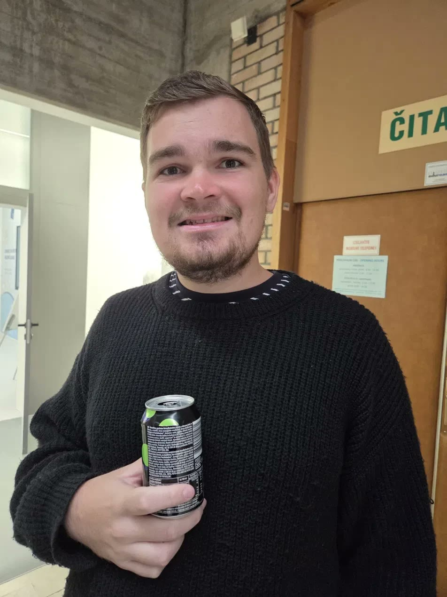
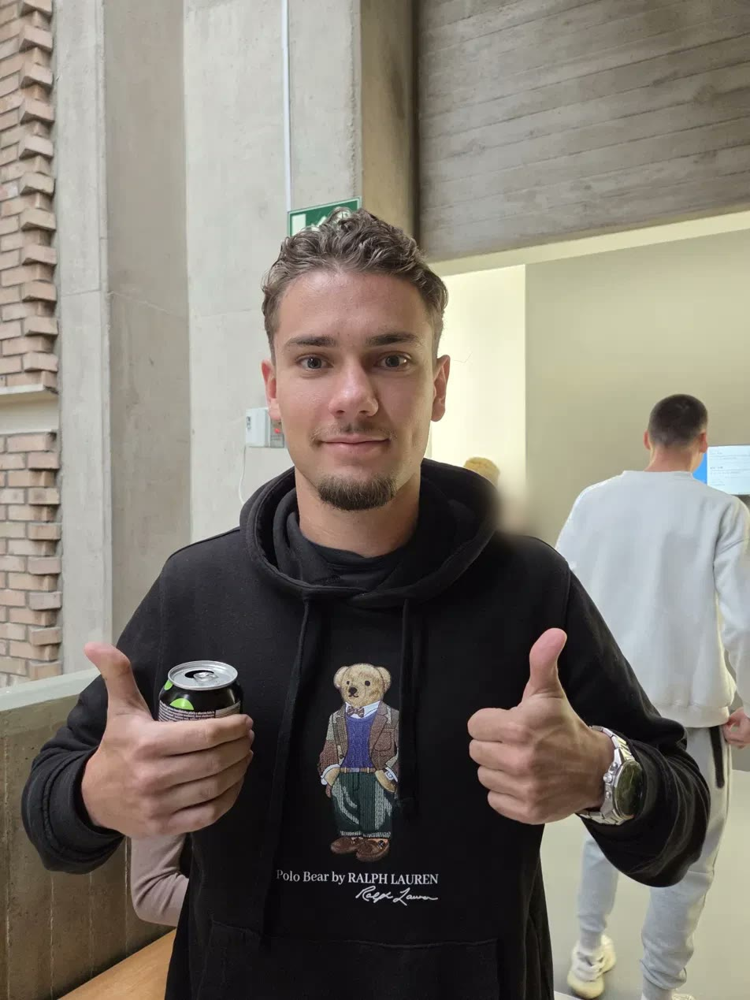

Faks & posel · Srečen konec
Najden: Tilen Spindler!
Po treh mesecih iskanja je Spindi spet med nami. Našel ga je nihče drug kot Črt Vuković. V knjižnici, shujšanega in žejnega.
- Najden
- Tilen Spindler (Spindi, Bambi)
- Našel ga je
- Črt Vuković (Vuko)
- Kje
- Knjižnica, pri vratih čitalnice
- Stanje
- Shujšan in žejen, a nasmejan
- Prva pomoč
- Hrana in Pepsi
Ko smo pred nekaj dnevi objavili, da Spindija pogrešamo, nismo pričakovali, da bo odziv tako hiter. Še manj smo pričakovali, kdo bo tisti, ki ga bo našel. Junak tega tedna je Črt Vuković, ki je pred kratkim sam še sedel v hišnem priporu. Očitno ga je mama izpustila ravno pravi čas.
Najdba v knjižnici
Vuko trdi, da je šel v knjižnico študirat. Priče pravijo, da je iskal wifi. Kakorkoli že, pri vratih čitalnice je za zadnjo mizo opazil znan obraz. Spindi je sedel med kupom učbenikov, bil je opazno shujšan in žejen. Zaloga robčkov mu je po lastnih besedah pošla že konec avgusta, ledenega čaja pa še prej.
Kako dolgo je bil v knjižnici, ni jasno. Knjižničarka pravi, da je mislila, da je del opreme.
Prva pomoč: hrana in Pepsi
Vuko je ravnal hitro in odgovorno. Spindija je najprej nahranil. Po neuradnih podatkih je šlo za sendvič iz menze in dva rogljička. Nato mu je kupil Pepsi, kar je Spindija po besedah prič vidno oživilo.


Strokovnjaki ugotavljajo, da je Spindi tokrat oblečen v pulover brez puhovca. Okrevanje poteka po načrtu.
Vrnitev na faks
Ko je Spindi spet prišel k sebi, ga je Vuko pripeljal na faks. Pokazal mu je hodnik, avlo in na koncu še učilnico, kjer sošolci preživijo dan. Spindi je bil po poročanju prič presenečen, da ima učilnica stole, in še bolj, da so nekateri zasedeni.
Njegov stol v zadnji vrsti je bil še vedno prazen. Robček, ki so ga sošolci nanj pustili v spomin, je bil še vedno tam. Spindi ga je pobral, ga skrbno zložil in pospravil v žep. »Za vsak primer,« je rekel.
Neznana simpatija
Najbolj zanimiv del dneva pa je prišel kasneje. Spindi je učilnico po dolgem času delil tudi z neznano simpatijo. Priče opisujejo dolge poglede čez vrste, nasmeh brez razloga in en sam stavek, ki ga je Spindi ves dan ponavljal: »Dobro, da sem prišel.«
Kdo je skrivnostna oseba? Uredništvo ime pozna, a ga zaenkrat zadržuje. Ime razkrijemo kmalu.
Izjave
»Hvala, Vuko. In hvala za Pepsi. Robčke imam še doma, če jih kdo rabi.«
Tilen Spindler, najdeni
»Nisem junak. Videl sem fanta, ki je potreboval pijačo, in sem ukrepal.«
Črt Vuković, najditelj
»Vuko je s tem dejanjem morda odkupil vse fuge. Skoraj vse.«
Vir blizu družine Vuković
Kaj sledi
Uredništvo bo spremljalo Spindijev prvi teden na predavanjih. Prisotnost bomo šteli, robčke tudi. Črt Vuković pa si je po mnenju uredništva prislužil naziv junak tedna. Mama naj bi bila ponosna. Pripor je, kolikor vemo, uradno končan.
Kdo je simpatija?
Ugibaj z nami. Pravo ime razkrijemo v eni od naslednjih številk.
Moja teorija
Satira. Tilen ni bil nikoli zares pogrešan in Črt ni bil nikoli zares v priporu. Pepsi pa je bil čisto pravi.